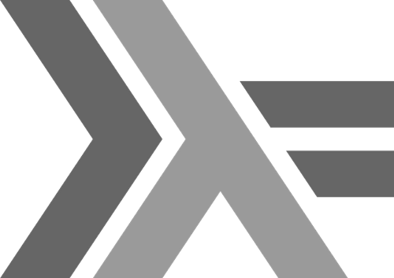

This post started as a rant in the email to a colleague, moving to messages with my son, and then to LinkedIn exchanges with some well known people in Haskell community (who were kind enough not to ban me)…
I tried to convert this rant into the collection of ideas that I hope could help both the people who are just starting to learn Haskell and, maybe, some of those who are getting through the advanced levels.
Why Haskell?
Many programmers using Haskell in production believe that it is the most advanced programming language, giving its users the highest productivity and the lowest cost of application ownership among all programming languages 1.
Not only it has the immutable data structures and both lazy and strict evaluation, it has a very advanced type system, with polymorphism and inheritance for type classes (somewhat similar to interfaces in other languages), generic programming, quasi-quotes (allowing for embedded DSLs), type families, generalized algebraic data types, ad-hoc dependent types, etc.
I have written that Haskell is a higher order language, that allows to create an equivalent of the new language as a library. Even the core of the Haskell itself - data structures, Monads, concurrent channels and transactional memory, that might exist as language level primitives in other languages, are just libraries written in Haskell.
Why there is no wider adoption?
If Haskell is such an advanced and effective language why do we not see a much wider commercial adoption? I believe it is caused by how we teach it - it takes 5 times longer than it could have if the onboarding of the newcomers were more effective.
Most engineers afford 2 months to get productive and fluent with a new language. It is exactly how much time it takes with Haskell if you are surrounded by other engineers who use it 2, but if an engineer learns Haskell on their own, they usually get stuck.
Most tutorials and books teach Haskell in a way similar to how imperative languages are taught, without focussing on the differences on how to read and write Haskell programs. We do agree that functional programming is fundamentally different, yet we teach it in a “classic” way.
So, what I wish somebody told me
The post title is borrowed from a great writing 3 that, sadly, lacks quite a few simple ideas that might have saved me several months as I was learning Haskell.
The Haskell education and onboarding, in comparison with JavaScript, for example, is broken - quite a few people abandon learning Haskell (I did too). There is a way to make people productive in Haskell quickly, but it needs to be done very differently. What seems missing is the basics:
- advice on how to read, write and think about “code”.
- guidance on what works and should be used in production and what is best avoided.
I hope that below ideas could help reducing this investment - some of them helped me, and some I had to figure out in a hard way.
How to read and think about code
Read types first, not code
We take it for granted that to understand “what the program does” you have to “read its code”. Unfortunately, coming from imperative languages, we do not see types as part of the code - we see them as annotations, something secondary, being there to appease compiler.
This mindset does not work in Haskell. Trying to understand what the function does purely from its code is at least ineffective, and in many cases it is not possible.
To get fluent and productive with Haskell you should not try to understand what a function “does”, instead focussing on what it “is” by looking at its type first, and to start seeing the types as the primary part of your code that drives your implementation, rather than restricts it.
Once you get into the habit of reading the types first, you are likely to discover that most libraries have more than enough documentation to use them effectively, contrary to a popular belief.
Read it slowly
To become effective at reading Haskell you have to unlearn how you read imperative languages.
The problem for the beginners is that we are used to having a lot of code that has to be read as prose. Haskell code can be very terse, and it has to be read slower, in some cases, as if it were a formula. When you get used to it, you can write and read the same logic much faster - and it also makes it easier to understand it later.
I had a particular example when 70 lines of TypeScript code took 8 one-line functions in Haskell (and all lines were normal length and quite readable), so 16 lines together with type signatures 4.
Reading each Haskell line can take twice longer, but because of much smaller overall size it is at least twice faster to write and to read than the equivalent logic in TypeScript.
Avoid terms used in imperative languages
It may seem insignificant, but using the correct terminology would help switching to the functional mindset:
- functions are not “called” and “executed”, they are “used” and “evaluated”.
- functions do not “return” values, even when they use
returnfunction, they are a binding of function code to the function name. - preferring
pureoverreturn5 would both save you typing and help switching mindset. - “names” are not “variables”, they are not “assigned”, they are “bound” to values.
dosyntax does not define execution steps, it defines the sequence of actions bound via their Monad type class interface.
Model your program with types
Types are the model of your program
Types in Haskell are not just annotations - they are the core of the language used to model the program and to define the shape of the data and the constraints on the program actions.
Looking at the function types you should be able to understand what the code is, without even looking at the code itself (and if it is not the case, consider using type synonyms or newtype).
Most imperative programmers see types as restrictions on their data. The reason for that is that most type systems are quite limited. Haskell advanced type allows to codify not only your data structures, but also your code behaviours and invariants.
Model top down, not bottom up
It is tempting to model the program bottom up, starting from the elements that define some small parts of your program - this is what we often do with imperative languages.
You would have a more effective design by modelling the program from top to bottom, breaking down the whole program to the small number of components, then breaking down each component to smaller parts, and so on until you have the whole program 6.
Understand data, class, type and newtype differences
The term class creates confusion. In many languages “class” means a hybrid of a data record and type class in Haskell; such thing requires data mutability and internal state.
Haskell class is a pure interface that can be implemented by many data types. The class does not tell you anything about the data, it only defines supported methods that can be implemented by class instances (another confusing term that does not mean the data instance, it actually means a particular, possibly parameterized type that implements the class).
As for the rest, data means “data type”, type means type synonym (just a shorthand for another data type), and newtype means the data type container that allows to differentiate, on a type level, between the data types that have the same internal representation - with zero memory and execution time overhead.
Become fluent with monads (and other abstractions)
The learning usually happens from specific examples to abstractions. While it is effective to learn a few examples to understand the Monad type class, learning 10 different types of Monads, as some tutorials encourage you to do, would neither help you understand Monad abstraction, nor help understand when it would be helpful to make your own data type a Monad class instance.
You would master Haskell faster if you learn to operate on abstractions regardless of examples.
“Monad tutorial fallacy” post compares Monads to the musical instruments, saying that you can only learn a specific instrument, not an abstract one. This comparison is flawed though, because, unlike musical instruments, all Monad instances have the same interface 7.
To understand Monad type class you also need to understand Functor and Applicative, that Monad inherits from. It means that monads have a richer interface than just bind method (>>=), so it is necessary to be fluent with these classes.
Write concise code
Some samples of equivalent code that would have helped me if somebody explained it earlier:
- Changing value inside Monad:
- with do notation:
getReversed :: IO String
getReversed = do
a <- getLine
return $ reverse a- same with Functor methods:
getReversed :: IO String
getReversed = reverse <$> getLine- Combining values from 2 (or more) Monads
- with do notation:
-- assuming NoBuffering mode
getName :: IO String
getName = do
putStr "Name: "
name <- getLine
putStr "Surname: "
surname <- getLine
return $ name <> " " <> surname- with Functor and Applicative methods:
getName :: IO String
getName = (<>) <$> get "Name: " <*> ((' ' :) <$> get "Surname: ")
where
get s = putStr s >> getLineMany people would argue that the code in do notation is easier to read. If that is how you feel, it goes back to the point that you have to unlearn how you read code and learn it again.
do notation is easier to read because it does look like an imperative code, and, possibly, by adding this syntactic sugar Haskell might have made learning more complex, as it makes it look like you can write an imperative code in Haskell.
As you learn, you will realise that while succinct code takes longer to read per line, it is much faster overall - so you are saving yourself time by making it more succinct. Also, many libraries use a succinct functional style, so getting fluent with it will pay back very quickly.
Do not worry about the glue code
Most of us use computers having quite vague ideas about how they work. Yet when it comes to reading the code, we have an expectation that we would have an equal understanding of every line and every character in our code.
With Haskell it helps to differentiate between your application domain code, that you want to be as readable as possible, and the “glue code”, that simply connects different things.
Such glue are, for example, various “lift” functions that allow to compose different Monad types. Next time you stumble on something that looks like “lift”, you can skip looking up what exactly it is - focus on the types around it and the functions that do something meaningful to your application - if compiler is happy and your code passes tests, understanding every bit of glue code is unnecessary.
What helps is making reusable functions with short names that minimize the cognitive overhead.
For example, one of the pieces of glue I found useful was this function:
liftError :: (MonadIO m, MonadError e' m) => (e -> e') -> ExceptT e IO a -> m a
liftError f a = liftIO (first f <$> runExceptT a) >>= liftEitherWhile it may look scary inside, like a computer, you don’t need to understand how it works to be able to use it effectively - it is enough to understand by looking at its type that it “lifts” an action expressed as ExceptT e IO monad to a more generic monad (MonadIO m, MonadError e' m), transforming the error type at the same time - it is useful when composing different libraries or modules each using their own error type.
An equivalent code in do notation might be easier to parse for the beginners:
liftError :: (MonadIO m, MonadError e' m) => (e -> e') -> ExceptT e IO a -> m a
liftError f a = do
b <- liftIO $ runExceptT a
let c = case b of -- this case is Bifunctor `first` method used above
Left e -> Left (f e)
Right x -> Right x
liftEither cBut the point is that you do not need to understand either code to effectively use this function, and you will see that short functions are easier to maintain.
Embrace purity
Function evaluation produces no side effects
In a functional language a function does nothing - it simply defines a transformation between types - but it does not perform this transformation until it is… It is tempting to say “called”, but the functions are not “called” in functional languages - they are evaluated and combined in bigger transformations, until the whole program is constructed.
Functions that do nothing cannot produce side effects. To my surprise this is true even for the functions that evaluate to the IO monad - it is conventional to say that such functions perform IO, are executed step by step, and have side effects.
But in reality it is not function evaluation that produces side effects - a function simply evaluates to an IO action. This action can be chained with another IO action or it can be passed as parameter and simply be thrown away based on some other function evaluation. The whole program is one combined IO action that is, when executed, does indeed produce side effects.
Many tutorials separate code to functions with and without side effects, but it only increases the confusion about how the language works, and confronted with a simple function of the type Bool -> IO a -> IO b -> IO (Either a b) most beginners (myself included) are puzzled by what this function can possibly do.
But once you remind yourself that functions do nothing, you may realize that this function probably evaluates to a single IO action by choosing one of two provided IO actions based on the boolean value (and none of the actions is performed, until the whole program runs):
ifIO: Bool -> IO a -> IO b -> IO (Either a b)
ifIO x a b = if x then Right <$> b else Left <$> aChoose effective tools
Effective developer environment for fast iteration
My choices, mostly suggested by some pragmatic people, were:
- stack, to avoid managing ghc and cabal separately, and always have compatible dependency versions that were tested against each other on stackage.org
- simple-hpack project template, for simpler dependency management
- Haskell Language Server for IDE
- ormolu for code formatting
- hlint - it is very helpful with its non-trivial suggestions on how the code could be simplified, making your code more concise.
- if you use VS Code - this extension includes ormolu and hlint out of the box.
Patrick Thompson has a great post about faster iteration in industrial Haskell on the subject.
Whichever tools you use, make sure they support fast code iteration.
Use Hoogle
Hoogle is a great resource to find functions via their type signatures. You are likely to have many cases when you know what kind of function you need (that is, its type), and you may expect that some library has it - but how do you find it?
In many other languages you would try to think how it is named, and then search for it by name. With Haskell all you need is to search for the type of a function.
For example if you search for function with type (a -> b) -> (c -> f a) -> c -> f b 8, which is a composition inside Functor, you would find two packages that implement it as function <.> which looks similar to <$> (the latter being function application inside Functor) - you can either use this function from the library or just look at its code and see that f <.> g is exactly the same as fmap f . g, so you could just use this code.
More advanced things that worked for me
Use recommendations from FP Complete
Using ReaderT monad transformer (or MonadReader class) with unliftio library would save you a lot of time when you get to handling exceptions (all real applications need it) 9.
If the application is large, you can have a polymorphic type of the environment in each application component, that only requires a particular property in the environment, without being able to access the whole, and without the need to recompile a module when the type of the environment changes - no need for a large shared global object 10.
Also, I found it effective to have MonadError in the stack than using exceptions - it seemed “better” to pass logical errors as Either, and without MonadError you would be either constantly handling them with case or with double functor applications 11.
Haskell libraries can create a “new language”
What comes as a surprise to newcomers is how large and complex Haskell libraries can be - many of them define their own “languages”, using complex combinations of operators not used anywhere else to express their logic. 12
Such libraries require a higher investment than some large libraries in other languages, but they require less time and offer better return on investment than learning a new language.
The last point applies to Haskell itself: it requires a substantially higher investment to master it, but it offers better returns on this investment. Paraphrasing a proverb 13, “I don’t have enough time to learn the languages that require less time to learn”.
Learn concurrent programming and STM
Tutorials often explain State monad, but it is rarely useful other than for imperative algorithms without side effects - there can be more efficient equivalent functional algorithms available just a search away (quite often, already implemented as a library) or you do need side effects.
You would be better off investing this time to learn STM primitives and the Haskell model of concurrency - Parallel and Concurrent Programming in Haskell is a great book that covers it.
Do not use algebraic effects (yet)
I am talking about about an approach to modelling operations via algebraic data types, that is provided by several libraries: polysemy, fused-effects, etc. 14
The exception is when you work with a project that uses them already, and you have people to save you when you get stuck implementing any non-trivial scenario.
The problem is that there are lots of libraries you are likely to use that are implemented with Monads, and you would spend a large amount of time figuring out wiring between the parts of your code. Also, exception handling proved non-trivial.
A very promising development is Eff library that relies on the new core language primitive proposed by Alexis King that was just added to GHC - that might be the solution we have all been waiting for, but we are still probably 3-10 years away from the ecosystem catching up.
For now, you would be much better off investing this time into getting fluent with Monad transformers and mtl libraries, and not worry about n2 composition cost 15.
Where to learn from
Do not read LYAH
Learn You a Haskell is branded as “the funkiest way to learn Haskell”, but to me it was the book that killed my interest to Haskell for several years. It has many details but it doesn’t provide a big picture.
If you must read it (e.g. your boss makes you), do it quickly and avoid the most detail-heavy chapters. And once you have read it, do not assume you can write real world Haskell programs - this book does not prepare you for it.
What to read
In addition to the books and posts mentioned before, you could find these books helpful:
Haskell in wikibooks - it was one of the most helpful resources for me.
Typeclassopedia by Brent Yorgey.
Thinking with Types by Sandy Maguire will provide with a much deeper understanding of type system, once you are fluent with the basics.
Real world Haskell looks promising - I wasn’t lucky enough to stumble upon it when I needed it, but I’ve learned from other writings and code of Bryan O’Sullivan.
There are lots of helpful blogs as well, the one by Alexis King stands out with its simplicity and clarity of writing about type systems.
Finally, r/haskell subreddit is a very engaged and supportive community of developers at all levels, where you can learn all the news and ask any questions.
Learn and use Haskell!
When people get a bit fluent with Haskell they suddenly see not only its rigour and stability, but also its simplicity - which may be surprising for many people, as Haskell is not particularly famous for it.
Many people using Haskell believe that it is simpler to create and maintain reliable, extensible and performant applications in Haskell than in any other language.
Haskell adoption can be made substantially easier with a bit more structured communication from the Haskell community, which is exceptionally supportive and helpful.
So, when you find yourself unable to maintain your own code after 3 years of writing it, time and time again, consider learning Haskell - some very complex and reliable systems are built using it.
As the measure of engineering productivity we can use the average time to launch a given set of requirements with a fixed size team, and as the cost of ownership - the engineering time required to maintain the application.↩︎
It is worth watching the video by the Aaron Contorer, the chairman of FP Complete, about functional programming, where he tells how Haskell allows to achieve productivity, quality and performance without the need to compromise on any of them.↩︎
What I wish I knew when learning Haskell is a great writing by Stephen Diehl that gave me a big picture of what can be done with Haskell - for some time it was my go to reference to find other resources.↩︎
I did took advantage of Haskell data immutability though, being able to use a dictionary as a key to another dictionary (by value) - in typescript I had to compute its hash.↩︎
pureandreturnare the same for well-behaved monads. Idris that is very similar to Haskell, with first class dependent types, completely removedreturnand only haspure- you could do it too in your Haskell code.↩︎A great book on modelling software systems is Structure and Interpretation of Computer Programs that is used as MIT course text - you would become a much better programmer if you study it, regardless of the language you use, and it would help you with the functional programming in particular - it uses Lisp.↩︎
“you don’t need to understand how it works to play on it” - it is based on the earlier post by Brent Yorgey. Some specific monad instances have additional interfaces, but there is a common interface to them all. And you can still play on them differently.↩︎
The actual letters you use for different types do not matter.↩︎
See great posts by Michael Snoyman about ReaderT pattern and unliftio↩︎
Using
HasFieldfrom base or a fancier one from generic-lens package.↩︎We used this approach for SMP agent that is part of https://simplex.chat. The caveat here is that
unliftiodoes not define an instance ofMonadUnliftIOforExceptT, so you would have to either have an orphan instance ornewtypeit, and be aware that both your logical errors and IO exceptions will be mixed into Either value - which is what you might want anyway.↩︎Lenses are one such example.↩︎
“I am not rich enough to buy cheap things”.↩︎
There are advanced composition scenarios that require using effects, but they are quite rare.↩︎
The cost to compose effects is linear, but there is a large constant factor, that makes mtl n2 composition cheaper in real world applications, particularly given that most of this cost has been covered by mtl library.↩︎